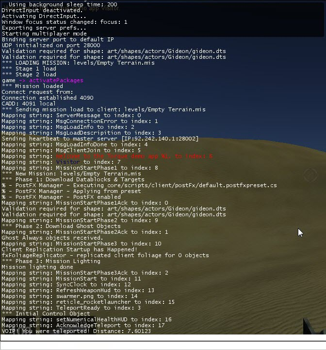

Introduction
Torque 3D was designed around networked games. This tutorial will
give an overview of the high level Client-Server Networking concepts
utilized by Torque and will show you how to make a network teleport
command sequence you can use as a springboard for your own networked
game play ideas.
Suggested reading before you start this tutorial:
This guide uses the Full Template from the Torque Toolbox as a base. If
you haven't already, go ahead and make a new project with the template.
What is covered in this tutorial:
- The Client/Server Concept
- Network Connection Classes – Linking Client and Server
- Sending Commands in the Torque Client/Server Model
The Client/Server Concept
This is a high level overview of the Client/Server Networking Model that Torque 3D uses for its networking model. A networked Torque game normally uses only a single Server instance, but multiple Client instances can connect to the Server at once. When a client joins a
server and the mission begins downloading, there is a 3 phase process:
- Datablocks are sent to the client, such as vehicle and weapon data. Datablocks will be covered in more detail in the Datablocks in Networking section of this tutorial.
- In-Mission Objects are ghosted to the client, such as other players. Ghosting will be discussed in The Server section of this tutorial.
- Finally, the scene is lit on the client, and then game play can begin.
There are 3 types of networking setups an instance of Torque can be in:
- Dedicated Server – The server has no local client; it only connects to external clients. Games like MMOs generally use dedicated servers.
- Hosted Server – The server has a local client that
connects directly to the server instance instead of over the network.
This is used in both a Single-Player instance of Torque, and when the
instance hosting the game also has a player. Many FPS games and LAN
party games use this setup, where one player's game is the host and
other clients connect to the host.
- Client Only – The game runs in client mode only and
joins a game play session by connecting to a server either on a local
network or over the internet.
The Server
The Server has multiple responsibilities, and is the central
"care-taker" of a networked game. Even when running in a single-player
instance, or when the server is not a dedicated server, Torque uses the
Client-Server Networking model. In this case, the server connects to a
"client" in the same game instance, and sends "short-circuited" commands
to the local client.
The Server has the following responsibilities, and may have more, depending on how a specific game is structured:
- Authoritative – Information transmitted from the Server
overrides the local Client information in the case of a bad prediction
on the part of the Client. This ensures that the local data of the Client does not
"drift" from the data the other Clients have.
- Ghosting – The server keeps track of all the "true"
objects in play, and "Ghosts" or copies data for each of them to the
Clients by using Scoping. What this means the server has a
master list of objects, and sends updated information for them to a
local copy of the object on the client.
- Scoping - Scoping helps sort out what each client is aware of so
Torque does not have to send updates for objects that don't need to be
updated. In order to save bandwidth and minimize network delay, objects
are initially ghosted to the client in the second phase of mission
startup.
- Datablocks – Datablocks are sent in the first phase of
mission start-up. The Server has all of the datablocks for clients to
download when they begin a mission. This means that the server only has
to send datablocks as they are needed, and can send new datablocks for
different missions. Datablocks are discussed further in the Datablocks in Networking section below.
- Collision & Physics – The Server performs collision checks and important physics calculations like rigid-body dynamics that affect game objects.
- Security – The Server can kick bad players and cheaters
out of the game, and can be setup to detect hacks being performed by a
bad client.
- Message Routing – The server can route messages, such as in-game chats, between clients.
The Client
The Client also has several important responsibilities, so that it
can work well with the server and provide a quality game play
experience:
- Rendering – the Client is responsible for rendering the
game for the player, and may be responsible for non-important physical
simulations, such as cloth simulations and particle effect physics.
- Sound – The Client instance plays back sound effects and
music tracks on the local machine and doesn't involve the server with
sound playback.
- Input – The Client accepts player input and sends that information to the server.
- User Preferences – Many games store user preferences on the local machine where the client instance runs.
- Prediction – The Client can predict what will happen to
game objects in the short term while it waits for the server to
synchronize, in order to maintain correct-looking game behavior.
- Interpolation – As part of the prediction process, the
Client can determine where it needs to be between where it thought it
needed to be and where the server tells it to go.
Datablocks in Networking
Datablocks are a useful way to have game objects share common data,
such as which model to use, physics properties, ammo type, whatever is
relevant to the class the datablock is associated with. This saves
Memory and makes it easier to create new types of objects by deriving
new datablocks from old datablocks and overriding only the data that is
different. Datablocks are declared on the server when a mission is
started, and wired over to clients when they begin downloading the
mission data. Once downloaded, they cannot be changed.
// An Example Datablock
// From art/datablocks/weapons/rocketLauncher.cs for the rocket launcher ammo:
datablock ItemData(RocketLauncherAmmo)
{
// Mission editor category
category = "Ammo";
// Add the Ammo namespace as a parent. The ammo namespace provides
// common ammo related functions and hooks into the inventory system.
className = "Ammo";
// Basic Item properties
shapeFile = "art/shapes/weapons/SwarmGun/rocket.dts";
mass = 2;
elasticity = 0.2;
friction = 0.6;
// Dynamic properties defined by the scripts
pickUpName = "Rockets";
maxInventory = 20;
};
Just like the benefit datablocks provide to memory, they also
save bandwith as the common data they contain is only sent once.
Datablocks also make it easier for a client to get mods from the server
without updating scripts, as the modded behavior is acquired when the
mod datablocks are downloaded.
When the server begins a mission with the client it sends relevant
datablocks to the client as part of a multiphase loading process.
Datablocks are sent in the first phase of the process, as all in-game
objects will need the datablocks to be initialized with the correct
settings. Once all datablocks have been downloaded, the server moves on
to Phase 2 of the mission downloading process.
For more information on datablocks, you can read: Datablock Editor
Network Connection Classes – Linking Client and Server
Torque uses several connection object classes to provide multiplayer
networking facilities. The basic functionality is defined in the
NetConnection and expanded upon with the other connection classes.
NetConnection
The Base multiplayer networking object class is the NetConnection
class, which provides the functionality to create connections between
two instances of torque (or the same instance if the client is also the
server).
//an example of NetConnection in the wild…
%connect = new NetConnection(MyNetConnection);
RootGroup.add( MyNetConnection );
%connect.connect(%someAddress); //connect MyNetConnection to %someAddress
//if successful, you are now networked on a basic level
The important console method commands to note in the class are:
- NetConnection.connect( %address ) – attempts to
connect this object to another NetConnection object in an instance of
Torque running at the network %address.
- NetConnection.connectLocal() - attempts to connect this
NetConnection object to the local server when running the client and
server in the same instance of Torque. Returns an empty string "" when
successful and an error message otherwise.
GameConnection
The primary subclass of NetConnection used by a Torque multiplayer
game, utilizes everything that NetConnection does but adds game-specific
networking functionality on top of that.
//making the GameConnection…
%gameCon = new GameConnection(MyGameConnection);
RootGroup.add(MyGameConnection);
MyGameConnection.connect(%someAddress); //connect MyNetConnection to %someAddress
The GameConnection class enables what is known as the Control Object, which can be anything derived from the ShapeBase engine class. The client instance of the game tracks control from this object, such as the Player or the Camera used in in editing, and sends it to the server. GameConnection has both client and server-side console methods:
//setting a control object, we do this on the server side
MyGameConnection.setControlObject(PlayerOne);
//change the view to third-person, on the server side
MyGameConnection.setFirstPerson(false);
//other fun stuff…
The GameConnection object applies changes to the client control object based on Player input to the game via the Move engine structure, which contains positional and rotational changes as
well as trigger state changes. The Moves are collected based on time,
applied to the client object, and then sent over to the server for
processing.
ServerConnection
This is the named instance of a GameConnection object that represents the Client Connection to the Server. It is created on the scripting level:
//from core/scripts/server/server.cs
%conn = new GameConnection( ServerConnection );
RootGroup.add( ServerConnection );
%conn.setConnectArgs( $pref::Player::Name );
%conn.setJoinPassword( $Client::Password );
LocalClientConnection
This is the named instance of a NetConnection/GameConnection
(depending on which class you use) object that is created when it is
connectLocal() method is performed successfully.
//furthering the ServerConnection example from before
%conn = new GameConnection( ServerConnection );
RootGroup.add( ServerConnection );
%conn.setConnectArgs( $pref::Player::Name );
%conn.setJoinPassword( $Client::Password );
// LocalClientConnection is made right here, on the engine level
%result = %conn.connectLocal();
if( %result !$= "" )
{
%conn.delete();
destroyServer();
return false;
}
Setting Up The Server
- First, we need to set up the Port that Torque will be
using for communication on the computer. A port is a communication
channel a computer uses to filter network traffic. The Stock Example
uses port# 28000 by default, set in core/prefs.cs. You can use the
script helper function portInit(%port), which will try to find an open
port with the console function setNetPort(%port). (Single-Player games can skip this step)
//an example of setting the port
%myPort = 12345;
//…
if( setNetPort(%myPort) )
{
//success!
echo("successfully connected to port:" SPC %myPort);
}
else
{
//failure
error("error connecting to port:" SPC %myPort);
//fallback behavior, maybe try a new port…
}
- Next, we need to enable the Torque instance to allow network
Connections, we do this by the console function
allowConnections(%enable). (Single-Player games can skip this step)
//activate connections on our selected port
allowConnections(true);
- Afterwards, we setup our ServerGroup, load up our datablocks, and begin loading the selected mission.
//an updated example from core/scripts/server/server.cs…
// Load the level
$ServerGroup = new SimGroup(ServerGroup);
// Load up any core datablocks
exec("core/art/datablocks/datablockExec.cs");
// Let the game initialize some things now that the
// the server has been created
onServerCreated();
loadMission(%level, true); //only true if loading first mission
- All of the above is can be performed with the createServer(%serverType, %level) script helper function:
//do all of the above in one call
if( createServer(%type, %myMission )
{
//server for mission created properly
echo(%type SPC "server created successfully for mission:" SPC %myMission);
}
else
{
//fallback behavior
error("error in" SPC %type SPC "server creation process!" SPC %myMission);
}
- At this point, if we're running a client on the same instance as the server, we can create our ServerConnection object, and connect it to the local server instance:
// from server.cs again… with a few extra comments
//create our server connection object
%conn = new GameConnection( ServerConnection );
// RootGroup is the master SimGroup for the entire instance
RootGroup.add( ServerConnection );
%conn.setConnectArgs( $pref::Player::Name );
%conn.setJoinPassword( $Client::Password );
//if you've modified or subclassed GameConnection,
// your additional connection settings might //go here
%result = %conn.connectLocal(); //create the LocalServerConnection
if( %result !$= "" )
{
//uh-oh, get rid of the bad connection
%conn.delete();
destroyServer();
return false;
}
- We can create the server AND connect locally with the
createAndConnectToLocalServer( %serverType, %level) script helper
function, which also calls the createServer() script helper function to
make the server.
//do all of the above
if( createAndConnectToLocalServer(%type, %myMission) )
{
//local server & local client connection for mission created properly
echo(%type SPC "server & client created successfully for mission:" SPC %myMission);
}
else
{
//fallback behavior
error("error in" SPC %type SPC "server & client creation process!" SPC %myMission);
}
Setting Up the Client
It is pretty straightforward, you can look at how the script helper function connect(%server) works to see this in action:
// Example from the connect(%server) script helper function in :
// core/scripts/client/missionDownload.cs…
function connect(%server)
{
//First, Create ServerConnection object.
%conn = new GameConnection(ServerConnection);
RootGroup.add(ServerConnection);
// Next, Setup our connection settings,
// such as player name, password,
// and any other game-specific extensions.
%conn.setConnectArgs($pref::Player::Name);
%conn.setJoinPassword($Client::Password);
// Call the GameConnection.connect(%server) method to initiate the connection.
%conn.connect(%server);
}
Using the GameCore Package
A Package is a set of modified scripts that can be loaded "over"
preexisting functions, and unloaded to remove the alternate
functionality. The GameCore package in a stock Torque project
sets up the FPS Single and Multiplayer games. You can find the GameCore
package functions in game/scripts/server/gameCore.cs.
The GameCore Package overrides the "blank" functionality associated with many GameConnection console callbacks with game-specific behavior, like informing the
client it has joined a game with a welcome message, putting in a message
when another player enters/leaves the game, how the player is spawned
in the world, setting the active inventory, and so on and so forth.
//game core example, onConnect override, short verson…
function GameConnection::onConnect(%client, %name)
{
// Send down the connection error info, the client is responsible for
// displaying this message if a connection error occurs.
messageClient(%client, 'MsgConnectionError',"",$Pref::Server::ConnectionError);
// Send mission information to the client
sendLoadInfoToClient(%client);
//other stuff…
// Save client preferences on the connection object for later use.
%client.gender = "Male";
%client.armor = "Light";
%client.race = "Human";
%client.skin = addTaggedString("base");
%client.setPlayerName(%name);
%client.score = 0;
%client.kills = 0;
%client.deaths = 0;
// Inform the client of all the other clients
%count = ClientGroup.getCount();
for (%cl = 0; %cl < %count; %cl++)
{
//…
}
// Inform the client about joining
//…
// Inform all the other clients of the new guy
//…
// If the mission is running, go ahead download it to the client
if ($missionRunning)
{
%client.loadMission();
}
else if ($Server::LoadFailMsg !$= "")
{
messageClient(%client, 'MsgLoadFailed', $Server::LoadFailMsg);
}
$Server::PlayerCount++;
}
To make your own game-specific functionality you could re-write the GameCore package or make a new package that overrides the functions that the GameCore Package defines.
Sending Commands in Torque Client/Server Model
Torque has a very simple setup for sending script commands between
the client and server, allowing for a great deal of flexibility in
setting up your own commands.
Client to Server Commands
The way to send a command from the client to the server is with the
commandToServer(%cmdname, %arglist…) console function.
The %arglist… is any number of optional arguments that the function
needs to pass to the server command.
//commandToServer example, tell the server to start some giant laser mayhem
commandToServer('GiantLaserAttack', %laserPosition, 12, "1.0 0.0 0.75 0.9");
For the server to process the command, use the prefix serverCmd, followed by the command name. The first argument is the game object id of the client that send the command, followed by the optional arguments given it.
//serverCmd example, notice the args match up with our commandToServer() call
function serverCmdGiantLaserAttack(%client, %position, %powerLevel, %laserColor)
{
if( $GiantLaserActive == false)
{
echo("Received GLA from Client:" SPC %client);
//perform some giant laser mayhem
beginGiantLaserAttack(%position, %powerLevel, %laserColor);
}
//there can only be one giant laser attack at any given time!
}
Server to Client Commands
Sending commands from the server to the client is *almost* the mirror
version of sending them from the client to the server. To send a
command to the client, use the
commandToClient(%client, %cmdName, arglist.. ) console function. You
have to specify a client to send the command to. Unlike with
commandToServer(), there could be multiple clients.
//commandToClient example, update our world damage state
commandToClient(%thatClient,'UpdateGiantLaserWorldDamage', %laserPosition, %radius);
//sending a command to all the clients
%count = ClientGroup.getCount();
for (%i = 0; %i < %count; %i++)
{
%cl = ClientGroup.getObject(%i);
commandToClient( %cl, 'UpdateGiantLaserWorldDamage' , %laserPosition, %radius);
}
And similar to the serverCmd prefix, we have the clientCmd prefix + commandName:
//clientCmd example, updating our GiantLaser world damage
function clientCmdUpdateGiantLaserWorldDamage( %position, %radius)
{
destroyPlayersInArea(%position, %radius);
destroyVehiclesInArea(%position, %radius);
destroyPropsInArea(%position, %radius);
applyWorldDamageDecal(%postion, %radius, "GiantLaser");
breakAllWindowsInArea(%position, %radius);
}
Making Your Own Commands
As you learned with the previous section, making client/server
commands in Torque is really easy. With this example, you'll learn how
to make your own client/server commands.
You'll use a timed command on the client to send a command to the
server saying "ready to teleport". The server will teleport the player
and send a command to the client to echo a message to the console;
Armed with that, you can modify the example and play with making your
own commands to make the server and client do whatever you want them to!
You'll be modifying the Stock Torque Full Template for this example, so if you have that ready to go then you're all set.
Client Setup
First, add a file on the client for our client side commands.
Call this file myClientCommands.cs and make it in the
game/scripts/client directory,. Once you've done that, add a few
functions to that file.
//this will send the command that you're ready to start the teleport procedure
function sendTeleportSignal()
{
%time = 5000; //a five second delay should be fine
// call the serverCmdTeleportReady, with a time argument of 5 seconds
commandToServer('TeleportReady', %time);
}
//this clientCmd will report the distance the server teleported the player
function clientCmdAcknowledgeTeleport(%distance)
{
// tell the user how far up they were teleported
echo("VOIP! You were teleported! Distance:" SPC %distance);
}
Server Setup
Next, add our server command functions. Make a file in
the game/scripts/server directory called myServerScripts.cs, and fill it
in with the following code:
//this will set us up to teleport the clients in a few seconds
function serverCmdTeleportReady(%client, %time)
{
schedule(%time, 0, "beginTeleport"); //schedule our teleport
}
//this function will send all the clients the teleport command
function beginTeleport()
{
%count = ClientGroup.getCount(); //get the count for all of our clients
for (%i = 0; %i < %count; %i++)
{
%cl = ClientGroup.getObject(%i); //get each client
%dist = 5 + (getRandom() * 5); //generate a random distance between 5 and 10
%controlObject = %cl.getControlObject(); //nab our control object for this client
teleportUp(%controlObject,%dist); //teleport our object
commandToClient( %cl, 'AcknowledgeTeleport', %dist); //send the command to the client
}
}
//teleport our control object up!
function teleportUp(%controlObject, %distance)
{
%pos = %controlObject.position; //nab position
%height = getWord(%pos,2); //get the current height
%height += %distance; //add the distance
%pos = setWord(%pos, 2, %height); //set the position
%controlObject.position = %pos; //set the control the position of the object
}
Execution Setup
Now, go to game/scripts/main.cs, and add the following under
where the normal init.cs scripts are executed, so we can execute our new
scripts:
// Load the scripts that start it all...
exec("./client/init.cs");
exec("./server/init.cs");
//add our own command scripts
exec("./client/myClientCommands.cs"); //exec our client commands
exec("./server/myServerCommands.cs"); //exec our server commands
Mission Setup
Finally, go to game/core/scripts/client/mission.cs, and add the
following line at the end of the clientStartMission() script function,
after $Client::missionRunning = true;, this is so a client can trigger
the teleport sequence whenever they enter the game:
//…
// Done.
$Client::missionRunning = true;
sendTeleportSignal(); //start our teleportation sequence
(click to enlarge)

And that is all there is to it! Every time a new client Joins the party,
everyone gets teleported a random distance. Now that you know how to
make your own client and server scripts, you can start working on your
own networking ideas.
Further Reading
For further reading and a deeper understanding of Torque's Netcode, check out:
|
{kind=link}